Emergency Response – Bimbo
Urgent replacement and programming of Lenze drives with synchronization, reducing production line downtime and preventing multi-million dollar losses.
Control & Automation Engineer
Industry 4.0 · IIoT · SCADA/MES Systems

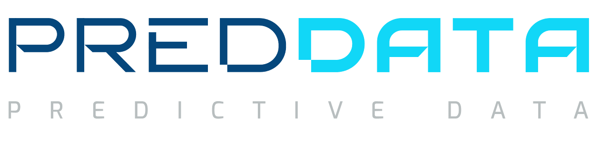
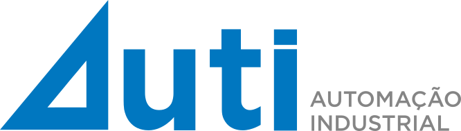
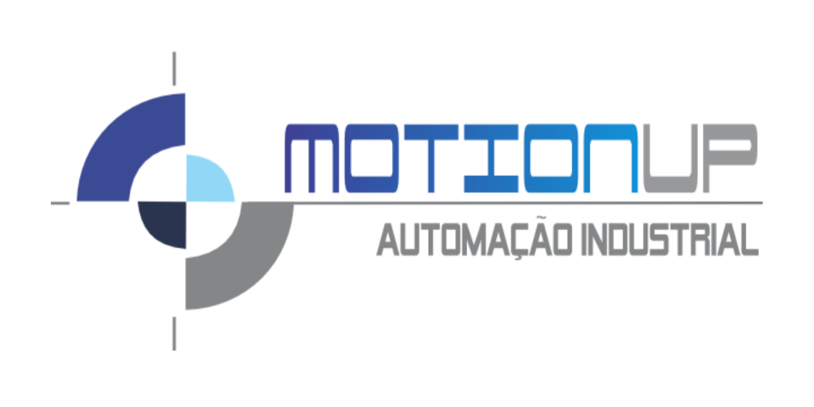

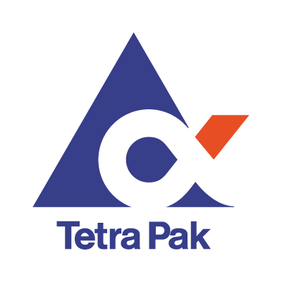
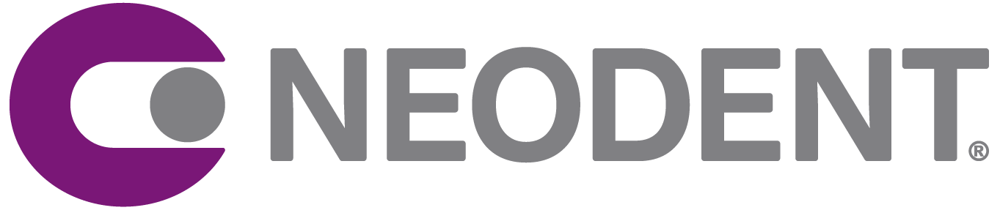
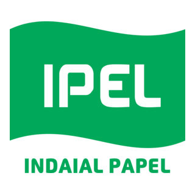
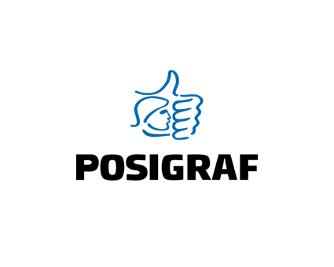
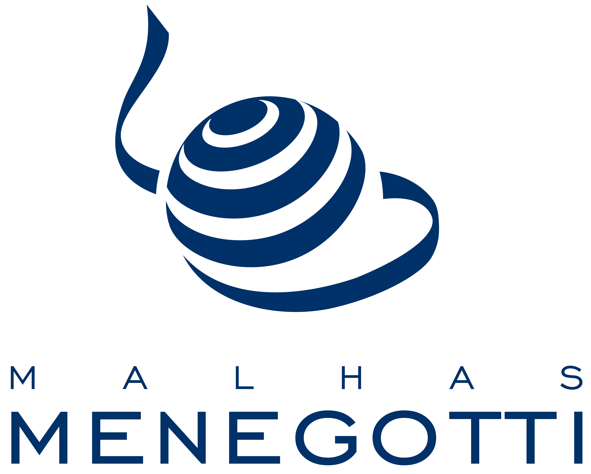
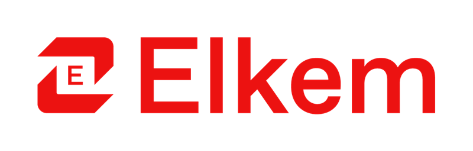

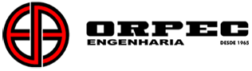
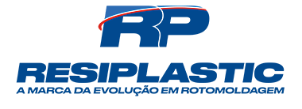
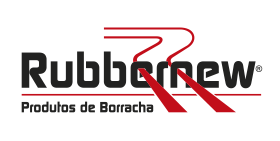
The technologies and platforms I work with every day
 Siemens
Siemens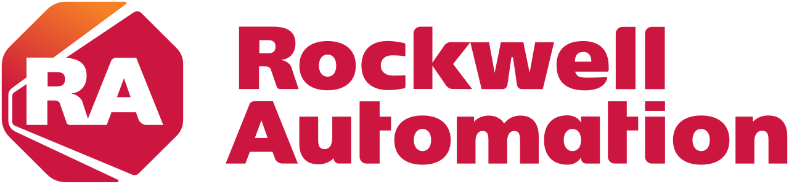
Rockwell ABB
ABB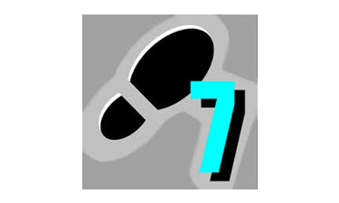
Step 7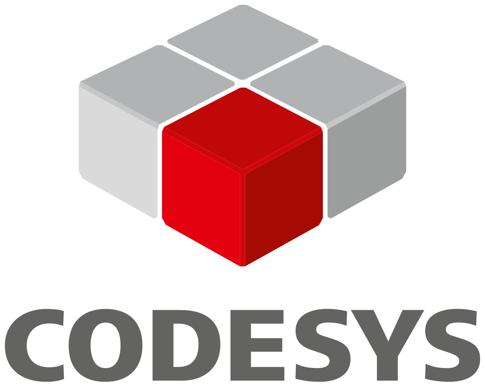
Codesys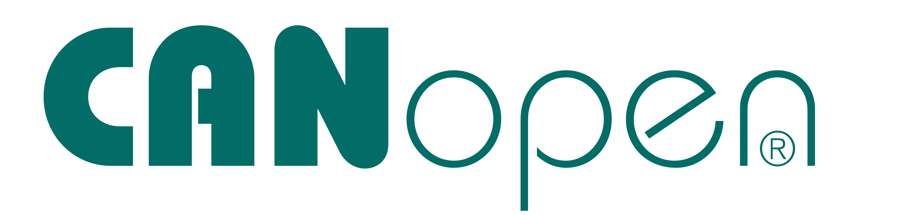
CANopen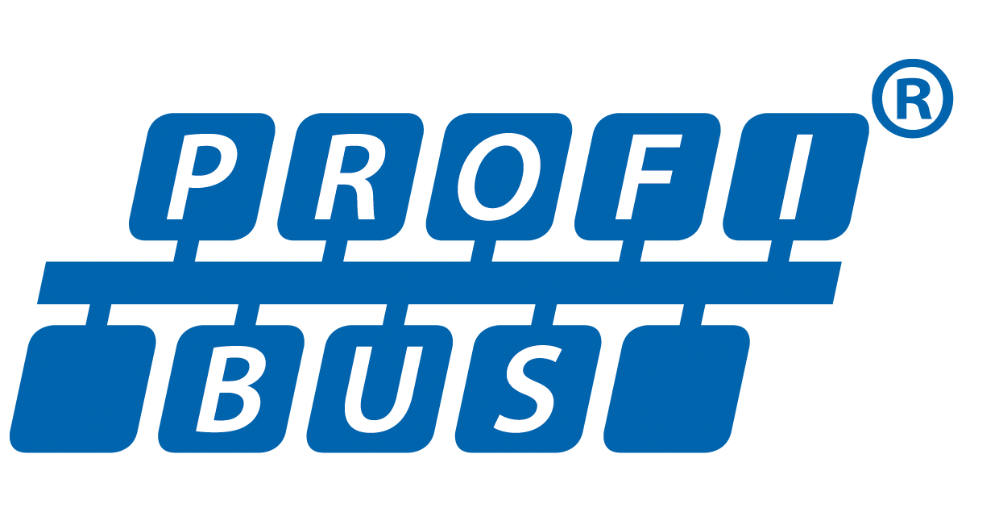
Profibus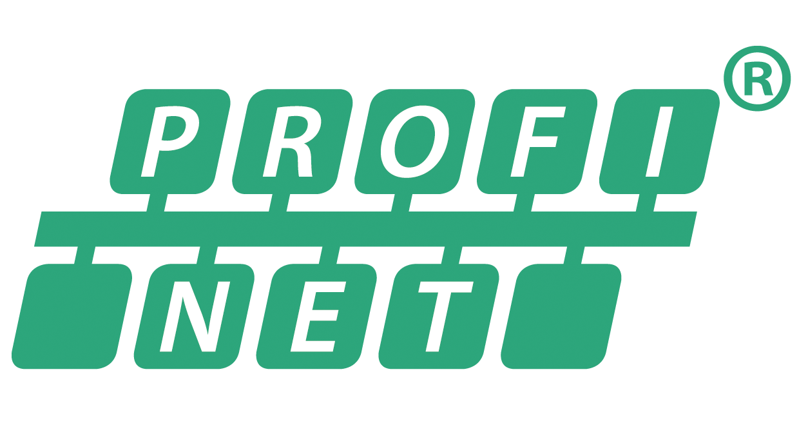
Profinet Python
Python Docker
Docker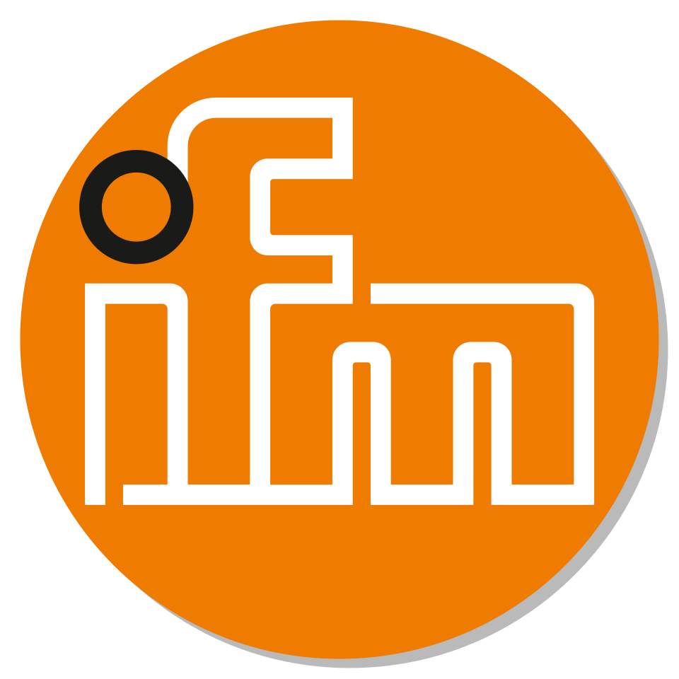
IFM JavaScript
JavaScript HTML/CSS
HTML/CSSSiemens, Rockwell, Lenze, B&R · CANopen, EtherCAT, Modbus, PROFINET
Ignition, Node-RED, Elipse E3 · Java, Python, Docker, MySQL
Industry 4.0, OEE Systems, SCADA/MES · PID Control, TAF/TAC, PID Tuning
Real-world industrial solutions designed, built, and deployed

Andon monitoring system built in Ignition for the main production line at Danfoss Tallahassee.

PLC and Ignition software refactoring aligned to Danfoss global standards, directly integrated with MES.

Data capture, database logging, and OEE visualization using the Sepasoft module on Ignition.

Custom Java driver for Ignition enabling communication with Atlas Copco tightening tools via Open Protocol.

PID-based chemical flow control running on Siemens S7-300 PLC at Indaial Papel.
High-impact field interventions that prevented costly downtime
Urgent replacement and programming of Lenze drives with synchronization, reducing production line downtime and preventing multi-million dollar losses.
Retrofit and CANopen behavior masking using a custom microcontroller to maintain compatibility with a B&R industrial PC during drive replacement.
Specialized maintenance and complex fault-finding on Profibus/Profinet networks at large-scale pulp and paper industries.
A trajectory built across industry-leading environments
Focus on Industry 4.0, IT/OT integration, OEE systems using Ignition, Java, Python, and Docker.
Development of large-scale automation projects, SCADA/MES systems and standardization using Siemens and Rockwell platforms.
Maintenance, troubleshooting, electronic diagnostics, and system integration with Lenze drives, CANOpen, PLCs, and variable frequency drives.
The Danfoss Tallahassee plant needed real-time visibility into production-line stoppages and anomalies. Operators lacked a unified view to respond quickly to equipment faults, leading to hidden downtime and delayed escalation.
Designed and deployed a full Andon system inside Ignition Perspective. The solution included custom tag bindings to PLC signals, a color-coded station status board visible on multiple screens across the shop floor, and an alarm escalation logic that auto-notified supervisors after defined response windows.
Response time to line stoppages reduced by ~40%. Supervisors gained a dashboard with shift-by-shift OEE breakdown, directly feeding the MES reporting chain.
Danfoss corporate mandated that all their plants worldwide adopt a unified software standard for PLC code and SCADA/MES integration. The Brazilian plant's legacy codebase was largely custom and incompatible.
Led a full refactoring of Siemens PLC function blocks (step-by-step migration to corporate FB library), and redesigned the Ignition project to follow the global HMI template. Developed Python scripts for data bridging between legacy historians and the new MES APIs.
Plant passed Danfoss global audit with zero critical non-conformances. The standardized code reduced future support time by an estimated 60%.
Lear's production team had no automated method to calculate OEE (Availability × Performance × Quality). Data was collected manually in spreadsheets, making real-time decisions impossible.
Built a complete data-capture layer reading PLC signals via OPC-UA into Ignition tags. Used the Sepasoft MES module to define production models (ideal cycle times, shift schedules, reason codes). Created dashboards for operators, supervisors, and plant managers with drill-down capability.
OEE baseline established for 12 production lines. Management identified a 15% availability loss due to untracked micro-stoppages and implemented corrective actions within the first month.
Atlas Copco tightening tools communicate via Open Protocol (TCP), a standard not natively supported by Ignition. No off-the-shelf module was available, leaving tightening data outside the SCADA/MES loop.
Developed a custom Ignition module in Java using the Ignition Module SDK. The module opens persistent TCP connections to each Atlas Copco controller, parses Open Protocol MID packets, and exposes tightening results (torque, angle, OK/NOK) as real-time Ignition tags accessible to any Perspective screen or database transaction group.
Tightening traceability fully integrated into MES. Each assembly cycle's fastening data is logged with timestamp, tool ID, and pass/fail — enabling full production traceability without manual inspection steps.
The paper manufacturing process required precise dosing of chemical additives. Manual control caused quality inconsistencies and chemical waste, increasing production costs.
Implemented cascade PID control loops on a Siemens S7-300 PLC to regulate the flow of multiple chemical components based on paper machine speed. A SCADA supervisory layer provided operators with live trend visualization and setpoint adjustments within safety limits.
Chemical waste reduced by ~20%. Paper quality consistency improved across shift changes, eliminating manual operator variance as a source of defects.
Bimbo's main bread production line came to a complete halt due to a failed Lenze drive controlling the dough-transport conveyor. The line stoppage was threatening multi-million dollar losses per hour due to perishable batch spoilage.
Responded on-site within hours. The replacement drive required full parameterization including synchronized speed ramp-up tuned to adjacent conveyor segments — a critical requirement to avoid dough shear faults. Programmed the drive parameters from scratch using Lenze's engineering software, validated synchronization at low speed, and gradually ramped the line to full production.
Line restored to full production in under 4 hours. No batch loss. Client avoided estimated R$800k in downtime costs for that shift.
Posigraf's printing press used a B&R industrial PC as the motion master, communicating with a fleet of drives over CANopen. The drives needed replacement but the new models had a different CANopen profile (PDO mapping), making them incompatible with the existing B&R program — which could not be modified.
Designed and built a custom microcontroller-based adapter that sat between the B&R master and the new drives. The adapter presented the old CANopen profile to the B&R while translating all commands and status words to the new drive's profile in real time — effectively masking the hardware change from the host controller.
Full machine compatibility restored without touching the B&R source code. Machine resumed operation with zero visible change to operator or existing software.
Large-scale pulp and paper plants with hundreds of field devices on Profibus segments experienced intermittent communication faults, drive trips, and unexplained PLC errors that in-house teams couldn't diagnose.
Conducted systematic network analysis using Profibus protocol analyzers to identify signal degradation, termination issues, duplicate node addresses, and incompatible GSD configurations. Replaced faulty network components, corrected cable routing, and reconfigured problematic nodes.
Resolved long-standing intermittent faults across multiple plants. In one case, a root-cause was traced to a single corroded connector responsible for 3 months of unexplained production losses.